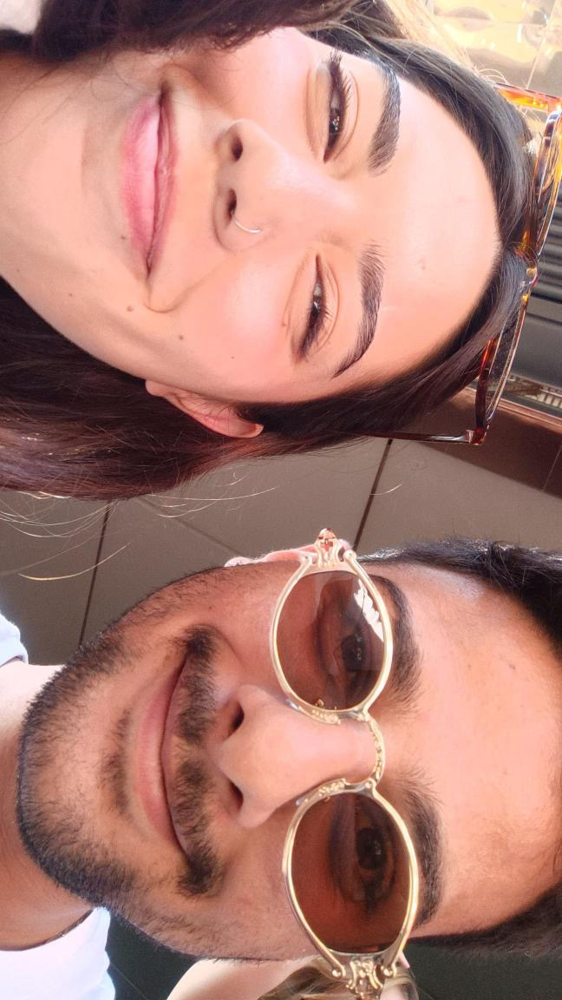
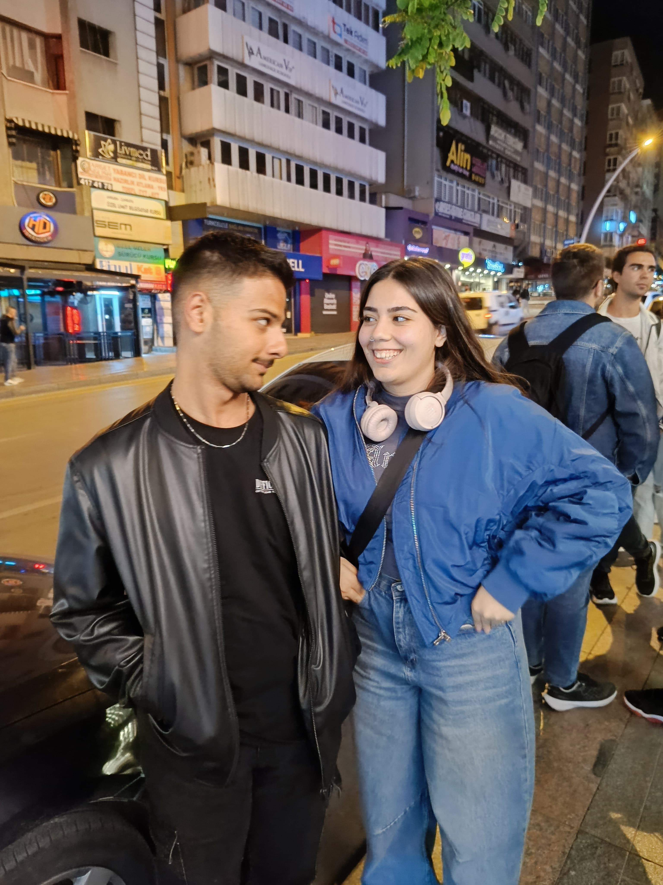
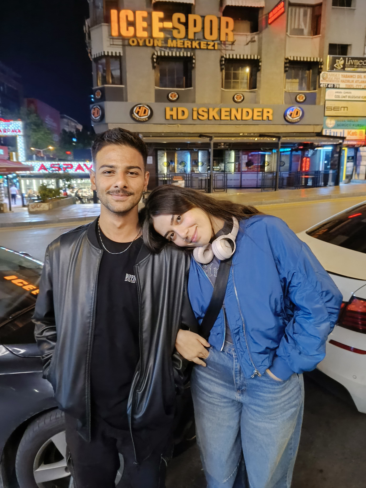
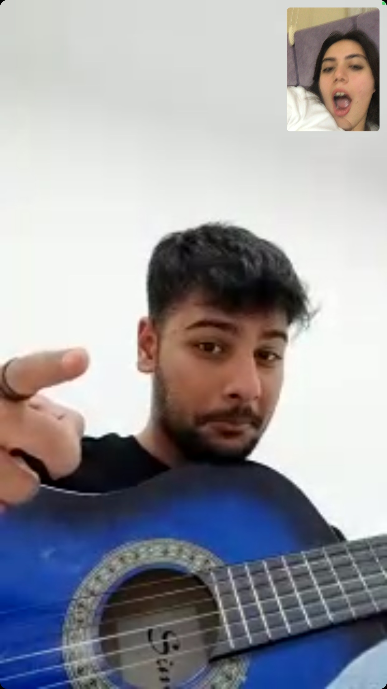
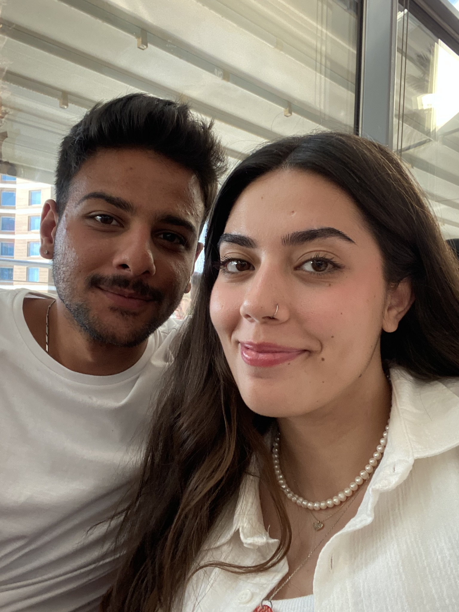
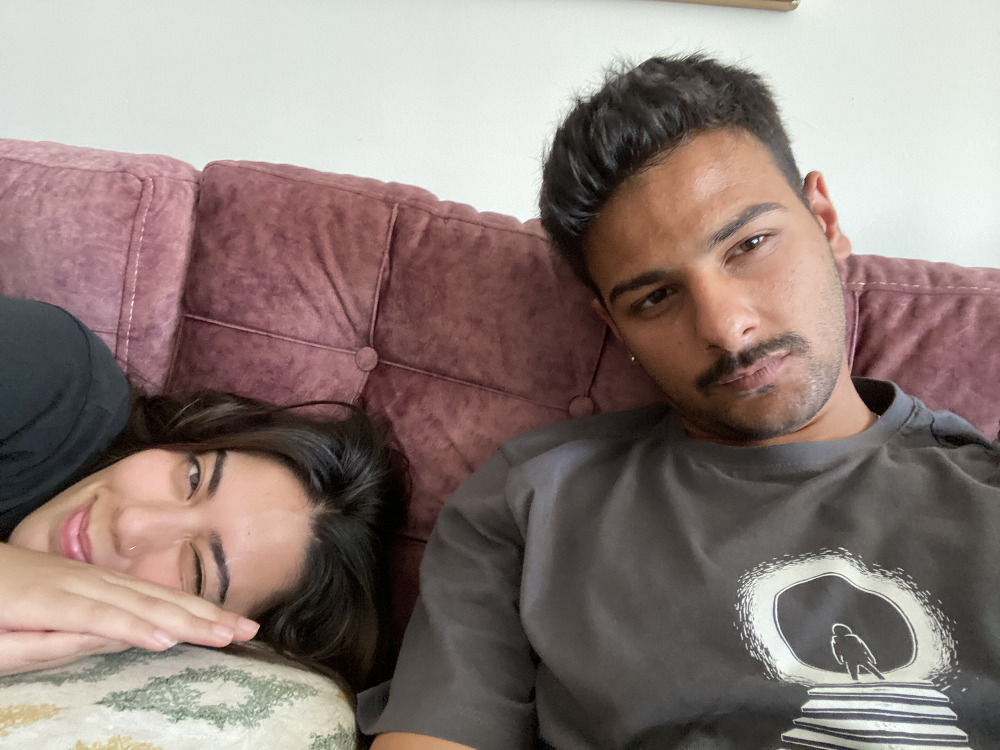

canım, kelimelerim bile yetmeyecek bunları anlatmaya muhtemelen.
Ama zaten bunları sık sık duyurmak için elimden geleni yapmaya çalıştım.
Çünkü varken de yokken de ben iyi hissediyorsam senin için,
bunları duyman ve bilmen gerekiyor demektir.
Taa bundan seneler öncesindeki ben ve sana gidiyorum şimdi, ne kadar da küçüğüz baksana.
O asıl günü hiç aklımdan çıkaramıyorum, birbirimizi daha iyi tanıdığımız o güne,
iyi ki de o gün ayaküstü duymuşum senden onları, sen de benden.
O kadar şanslı biriyim ki, arkamda hep duracak senin gibi bir dostum oldu.
Kimse olmasa da sen vardın, sen yokken de sen vardın.
Seni hep çok sevdim.
Sohbetlerimiz, gülmelerimiz, kızmalarımız, üzülmelerimiz…
En çok da birlikte yürüdüğümüz yollar.
En zor zamanımda asla unutamayacağım biri oldun benim için.
Sana sadece erkek arkadaş diyemiyorum, daha da fazlasın benim için.
Gece yarılarına kadar konuşmalarımızın verdiği rahatlık,
ve her gece uyurken senin oralarda bir yerlerde olduğunun huzuruyla uyumak benim için hep paha biçilemez oldu.
Teşekkür ederim her şey için, bana yoldaş olduğun için.
Senden iyisi de asla yok, merak etme.
Teksin ve bendesin, dünyanın en şanslı kızı oluverdik bir anda.
Bundan sonraki gecelerde de hep senin oralarda olduğunu bilerek uyuyacağım ve buna şükrediyorum.
Ve sen de bunu yap çünkü her zaman senin için burada olacağım.
Senin beğendiğin kekleri ve kısırları yapacağım.
Seni bu mutlu gününde yalnız bıraktığımı asla düşünme.
Kalbimle hep senin elinden tutuyorum.
Bunu hissetmen için de sana bunu hazırlamak istedim.
Bundan sonraki adım attığın her yol sana iyilik ve güzellik getirsin,
ve tahmin ettiğinden bile iyi yerlere götürsün.
Ve mümkünse benim olmadığım yerlere de çok çıkmasın.
İyi ki varsın ve iyi ki de hep olacaksın.
Benim bir numaralı ve dünyanın en yakışıklı psikoloğum…
Seni çok seviyorum ❤️


